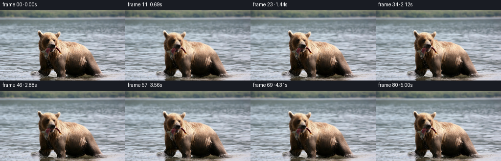
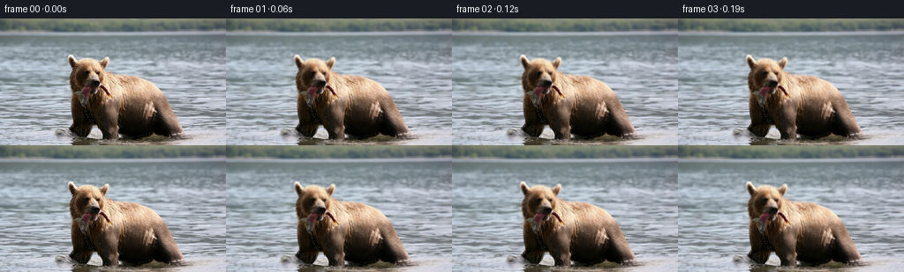

← 本轮 smoke 总览traex/DeepSeek-V4.1-Flash · 0872_s3
text · 256×144 · 16 FPS · 81 帧 · 状态 failed · 输出 tokens 50223
原始任务a brown bear in the water with a fish in its mouth
当前保存结果
此结果可播放，但该运行尚未通过最终提交审核。页面展示不代表评测通过。
已保存候选与代码修改
这里按时间展示外部捕获的候选，每份均可单独播放。保存新版本不等于完成视觉检查；下方工具证据记录实际看过的图。
候选 01 · 2026-11-08T20:43:24.993709+00:00 · 点开播放与检查图
inspection.png

transition_check.png

代码变化
--- 上一保存版本
+++ 本次保存版本
@@ -0,0 +1,168 @@
+from pathlib import Path
+
+import numpy as np
+from PIL import Image
+from scipy import ndimage
+
+import artifact_io
+
+
+ROOT = Path(__file__).resolve().parent
+WIDTH = 256
+HEIGHT = 144
+FRAMES = 81
+FPS = 16
+
+
+def smoothstep(edge0, edge1, values):
+ x = np.clip((values - edge0) / (edge1 - edge0), 0.0, 1.0)
+ return x * x * (3.0 - 2.0 * x)
+
+
+def sample_bilinear(image, x, y):
+ """Sample an RGB uint8 image at floating point source coordinates."""
+ x = np.clip(x, 0.0, image.shape[1] - 1.001)
+ y = np.clip(y, 0.0, image.shape[0] - 1.001)
+ x0 = np.floor(x).astype(np.int32)
+ y0 = np.floor(y).astype(np.int32)
+ x1 = np.minimum(x0 + 1, image.shape[1] - 1)
+ y1 = np.minimum(y0 + 1, image.shape[0] - 1)
+ wx = (x - x0)[..., None]
+ wy = (y - y0)[..., None]
+
+ top = image[y0, x0] * (1.0 - wx) + image[y0, x1] * wx
+ bottom = image[y1, x0] * (1.0 - wx) + image[y1, x1] * wx
+ return top * (1.0 - wy) + bottom * wy
+
+
+def foreground_mask(image):
+ """Find the connected warm/dark subject emerging from the cool water."""
+ rgb = image.astype(np.float32)
+ red, green, blue = rgb.transpose(2, 0, 1)
+ maximum = rgb.max(axis=2)
+ minimum = rgb.min(axis=2)
+ saturation = maximum - minimum
+
+ candidate = (
+ (red + 2.0 >= blue)
+ & (saturation > 5.0)
+ & (maximum > 20.0)
+ & (np.indices((HEIGHT, WIDTH))[0] >= 34)
+ )
+ candidate = ndimage.binary_closing(candidate, structure=np.ones((3, 3)))
+ labels, count = ndimage.label(candidate)
+ if count:
+ areas = ndimage.sum(candidate, labels, index=np.arange(1, count + 1))
+ subject = labels == (int(np.argmax(areas)) + 1)
+ else:
+ subject = candidate
+
+ subject = ndimage.binary_fill_holes(subject)
+ subject = ndimage.binary_closing(subject, structure=np.ones((5, 5)))
+ # Keep the silhouette soft enough to avoid a cut-out edge.
+ mask = ndimage.gaussian_filter(subject.astype(np.float32), 0.7)
+ return np.clip(mask, 0.0, 1.0)
+
+
+def make_frame(source, subject_mask, frame_index):
+ if frame_index == 0:
+ return source.copy()
+
+ t = frame_index / FPS
+ yy, xx = np.mgrid[0:HEIGHT, 0:WIDTH].astype(np.float32)
+ rgb = source.astype(np.float32)
+
+ # A restrained current moves the water horizontally while fine crossed
+ # waves distort its surface. Motion is faded in below the shoreline.
+ surface_weight = smoothstep(14.0, 30.0, yy)
+ bear_exclusion = ndimage.gaussian_filter(
+ ndimage.binary_dilation(subject_mask > 0.08, iterations=2).astype(np.float32),
+ 1.2,
+ )
+ water_weight = surface_weight * (1.0 - np.clip(bear_exclusion * 1.15, 0.0, 1.0))
+
+ flow_x = 0.48 * t
+ wave_x = (
+ 0.58 * np.sin(2.0 * np.pi * (xx / 37.0 + yy / 83.0 - 0.34 * t))
+ + 0.26 * np.sin(2.0 * np.pi * (xx / 19.0 - yy / 46.0 + 0.57 * t))
+ )
+ wave_y = (
+ 0.40 * np.sin(2.0 * np.pi * (xx / 53.0 - yy / 31.0 + 0.43 * t))
+ + 0.19 * np.sin(2.0 * np.pi * (xx / 23.0 + yy / 67.0 - 0.71 * t))
+ )
+ water_x = xx - flow_x + wave_x
+ water_y = yy + wave_y
+ warped_water = sample_bilinear(rgb, water_x, water_y)
+ frame = rgb * (1.0 - water_weight[..., None]) + warped_water * water_weight[..., None]
+
+ # Small moving glints sell the change in surface orientation without
+ # changing the broad color balance of the source.
+ glint_a = np.sin(2.0 * np.pi * (xx / 31.0 + yy / 14.0 + 0.67 * t))
+ glint_b = np.sin(2.0 * np.pi * (xx / 47.0 - yy / 11.0 - 0.43 * t + 0.23))
+ glint = np.maximum(glint_a * glint_b - 0.42, 0.0) / 0.58
+ glint *= water_weight * (0.35 + 0.65 * smoothstep(35.0, 78.0, yy))
+ frame += glint[..., None] * np.array([2.8, 4.2, 5.2], dtype=np.float32)
+
+ # The subject breathes and rides very slightly with the water. The upper
+ # body has a little more travel than the submerged lower silhouette.
+ head_weight = np.clip(1.0 - (yy - 42.0) / 84.0, 0.25, 1.0)
+ bob = 0.66 * np.sin(2.0 * np.pi * t / 3.2)
+ sway = 0.24 * np.sin(2.0 * np.pi * t / 4.0 + 0.8)
+ chest = np.exp(
+ -((xx - 145.0) / 36.0) ** 2 - ((yy - 102.0) / 24.0) ** 2
+ )
+ breathe = 0.38 * chest * np.sin(2.0 * np.pi * t / 2.35 - 0.4)
+ subject_dx = sway * head_weight
+ subject_dy = bob * head_weight + breathe
+
+ # The bright fish at the bear's mouth gets an independent, slightly faster
+ # tail-led oscillation. It fades cleanly into the surrounding silhouette.
+ fish_weight = np.exp(
+ -((xx - 97.0) / 30.0) ** 2 - ((yy - 54.0) / 13.0) ** 2
+ )
+ fish_phase = 2.0 * np.pi * t / 1.85
+ subject_dx += 1.05 * fish_weight * np.sin(fish_phase)
+ subject_dy += 0.72 * fish_weight * np.sin(fish_phase + 1.15)
+
+ subject_x = xx - subject_dx
+ subject_y = yy - subject_dy
+ warped_subject = sample_bilinear(rgb, subject_x, subject_y)
+ warped_alpha = sample_bilinear(subject_mask[..., None], subject_x, subject_y)[..., 0]
+
+ # Keep the water line coherent where the animal meets the surface.
+ lower_fade = smoothstep(128.0, 143.5, yy)
+ warped_alpha *= 1.0 - 0.10 * lower_fade
+ frame = frame * (1.0 - warped_alpha[..., None]) + warped_subject * warped_alpha[..., None]
+
+ # A whisper of reflected light moves over the wet fur.
+ fur_light = (
+ 0.75
+ * np.sin(2.0 * np.pi * (xx / 69.0 - yy / 41.0 + 0.31 * t))
+ * chest
+ )
+ frame += fur_light[..., None] * np.array([2.1, 1.5, 0.8], dtype=np.float32)
+
+ # The camera is locked off; only an imperceptible exposure drift remains.
+ frame *= 1.0 + 0.0025 * np.sin(2.0 * np.pi * t / 4.8)
+ return np.clip(frame + 0.5, 0.0, 255.0).astype(np.uint8)
+
+
+def main():
+ source = np.asarray(Image.open(ROOT / "first_frame.png").convert("RGB"), dtype=np.uint8)
+ assert source.shape == (HEIGHT, WIDTH, 3)
+
+ mask = foreground_mask(source)
+ frames = np.stack(
+ [make_frame(source, mask, frame_index) for frame_index in range(FRAMES)],
+ axis=0,
+ )
+ frames[0] = source
+ assert frames.shape == (FRAMES, HEIGHT, WIDTH, 3)
+ assert frames.dtype == np.uint8
+ assert np.array_equal(frames[0], source)
+
+ artifact_io.save(frames, ROOT)
+
+
+if __name__ == "__main__":
+ main()
可观测工具行为
命令 1 · 2026-11-08T20:38:53.816256+00:00/bin/bash -c "pwd && rg --files -g 'prompt.txt' -g 'GENERATION_RULES.md' -g 'first_frame.png' -g '*.py' -g '*.sh' -g '*.json' -g '*.md' | sort"
exit 0 命令 2 · 2026-11-08T20:38:54.065326+00:00/bin/bash -c 'git status --short --branch'
exit 0 命令 3 · 2026-11-08T20:38:54.602328+00:00/bin/bash -c 'ls -lah'
exit 0 命令 4 · 2026-11-08T20:39:02.168272+00:00/bin/bash -c 'cat prompt.txt'
exit 0 命令 5 · 2026-11-08T20:39:02.962368+00:00/bin/bash -c 'cat GENERATION_RULES.md'
exit 0 命令 6 · 2026-11-08T20:39:03.491075+00:00/bin/bash -c "sed -n '1,240p' artifact_io.py"
exit 0 命令 7 · 2026-11-08T20:39:03.613091+00:00/bin/bash -c 'cat task_spec.json'
exit 0 命令 8 · 2026-11-08T20:39:03.823452+00:00/bin/bash -c "sed -n '1,260p' player_template.html"
exit 0 命令 9 · 2026-11-08T20:39:11.750272+00:00/bin/bash -c "python3 - <<'PY'
from PIL import Image
import numpy as np
im=np.array(Image.open('first_frame.png').convert('RGB'))
print('shape', im.shape, 'dtype', im.dtype)
print('min/max', im.reshape(-1,3).min(0), im.reshape(-1,3).max(0))
print('mean/std', im.reshape(-1,3).mean(0).round(2), im.reshape(-1,3).std(0).round(2))
# top colors exact and quantized
u,c=np.unique(im.reshape(-1,3),axis=0,return_counts=True)
idx=np.argsort(c)[-30:][::-1]
print('top exact colors')
for rgb,n in zip(u[idx],c[idx]): print(tuple(rgb),int(n),round(n/im.shape[0]/im.shape[1]*100,2))
q=(im//16)*16+8
u,c=np.unique(q.reshape(-1,3),axis=0,return_counts=True)
idx=np.argsort(c)[-25:][::-1]
print('top quantized')
for rgb,n in zip(u[idx],c[idx]): print(tuple(rgb),int(n),round(n/im.shape[0]/im.shape[1]*100,2))
PY"exit 0 命令 10 · 2026-11-08T20:39:20.184177+00:00/bin/bash -c "python3 - <<'PY'
from PIL import Image
import numpy as np
im=np.array(Image.open('first_frame.png').convert('RGB')).astype(float)
# 2x4 downsample luminance, edge
for name,arr in [('lum', im.mean(2)), ('sat', im.max(2)-im.min(2))]:
print('\\n',name)
h,w=arr.shape
# blocks 4x4
a=arr[:h//4*4,:w//4*4].reshape(h//4,4,w//4,4).mean((1,3))
chars=' .:-=+*#%@' if name=='lum' else ' .:-=+*#%@'
lo,hi=np.percentile(a,[2,98])
for row in a:
print(''.join(chars[min(len(chars)-1,max(0,int((v-lo)/(hi-lo+1e-9)*(len(chars)-1))))] for v in row))
PY"exit 0 命令 11 · 2026-11-08T20:39:26.880643+00:00/bin/bash -c "python3 - <<'PY'
import importlib.util
for x in ['numpy','PIL','scipy','cv2','sklearn','imageio','matplotlib']:
print(x, bool(importlib.util.find_spec(x)))
PY"
exit 0 命令 12 · 2026-11-08T20:39:36.960451+00:00/bin/bash -c "python3 - <<'PY'
from PIL import Image
import numpy as np
from colorsys import rgb_to_hsv
im=np.array(Image.open('first_frame.png').convert('RGB')).astype(np.float32)
r,g,b=im.transpose(2,0,1)
mx=im.max(2); mn=im.min(2); sat=(mx-mn)/(mx+1e-5); val=mx/255
# brown-ish: red > green, warm, darkish
for name,m in {
'brown': (r>g*1.04)&(g>b*1.02)&(sat>.10)&(val<.72),
'dark_brown': (r>g*1.04)&(g>=b*.98)&(sat>.12)&(val<.48),
'fish_light': (r>1.2*b)&(g>1.05*b)&(val>.55)&(sat>.15),
'dark': val<.22,
'black': val<.12,
'warm': (r-b>15),
'greenish':(g>r*1.04)&(g>b*1.02),
}.items():
ys,xs=np.where(m)
print(name, len(xs), 'bbox', (xs.min(),ys.min(),xs.max(),ys.max()) if len(xs) else None, 'meanrgb',im[m].mean(0).round(1) if len(xs) else None)
# row/column hist brown
m=(r>g*1.04)&(g>b*1.02)&(sat>.10)&(val<.72)
print('row hist',[(y,int(m[y].sum())) for y in range(0,144,8)])
print('col hist',[(x,int(m[:,x].sum())) for x in range(0,256,8)])
PY"exit 0 命令 13 · 2026-11-08T20:39:41.935390+00:00/bin/bash -c "python3 - <<'PY'
from PIL import Image
im=Image.open('first_frame.png').convert('RGB')
# nearest-neighbor upscale and split image into annotated bands as terminal-safe PPM? use ImageMagick if available
im.resize((768,432),Image.Resampling.NEAREST).save('.tmp/first_upscaled.png')
# Create 3 horizontal crops side by side x2
w,h=im.size
sheet=Image.new('RGB',(w*3,h*2),(0,0,0))
for i,(x0,x1) in enumerate([(0,96),(80,176),(160,256)]):
c=im.crop((x0,0,x1,h)).resize(((x1-x0)*3,h*3),Image.Resampling.NEAREST)
sheet.paste(c,(i*96*3,0))
# save just crop sheet
sheet.save('.tmp/first_crops.png')
print(im.size)
PY"exit 0 命令 14 · 2026-11-08T20:39:46.790177+00:00/bin/bash -c "python3 - <<'PY'
from PIL import Image
import numpy as np
im=np.array(Image.open('first_frame.png').convert('RGB'))
# display color samples in coarse 16x16 cells: mean and representative dominant color; quantized ANSI truecolor swatches might be supported
h,w=im.shape[:2]
for y in range(0,h,8):
line=''
for x in range(0,w,8):
block=im[y:y+8,x:x+8].reshape(-1,3)
med=np.median(block,0).astype(int)
# nearest base mapping
pal=[(0,0,0),(64,64,64),(128,128,128),(192,192,192),(255,255,255),(128,0,0),(255,0,0),(128,64,0),(255,128,0),(128,128,0),(255,255,0),(0,128,0),(0,255,0),(0,128,128),(0,255,255),(0,0,128),(0,0,255),(128,0,128),(255,0,255)]
chars=' .:-=+*#%@'
lum=med.mean()
line+=chars[min(9,int(lum/25.6))]
print(line)
PY"exit 0 命令 15 · 2026-11-08T20:39:51.685033+00:00/bin/bash -c "python3 - <<'PY'
from PIL import Image
import numpy as np
im=np.array(Image.open('first_frame.png').convert('RGB')).astype(int)
# Print dominant hue category for 8px blocks among rgb categories
for y in range(0,144,8):
line=''
for x in range(0,256,8):
b=im[y:y+8,x:x+8].reshape(-1,3)
m=b.mean(0); r,g,bl=m
sat=max(m)-min(m)
if max(m)<35: ch='K'
elif sat<10: ch='W'
elif r>g*1.10 and g>bl*1.05: ch='B' # brown
elif r>g*1.12 and g>bl*0.95: ch='O' # orange
elif g>r*1.05 and g>bl*1.03: ch='G'
elif bl>r*1.05: ch='C'
elif r>bl*1.15: ch='R'
else: ch='w'
line+=ch
print(line)
PY"exit 0 命令 16 · 2026-11-08T20:39:56.905765+00:00/bin/bash -c "python3 - <<'PY'
from PIL import Image
import numpy as np
im=np.array(Image.open('first_frame.png').convert('RGB')).astype(int)
# for each 8px block, category B / K etc detailed ASCII preserving bbox; map likely bear and fish based color
# print downsample by 4, chars from HSV category
arr=im
h,w=arr.shape[:2]
for y in range(0,h,4):
line=''
for x in range(0,w,4):
b=arr[y:y+4,x:x+4].reshape(-1,3); m=b.mean(0); mx=m.max(); mn=m.min(); sat=mx-mn
if mx<30: ch='@'
elif sat<8: ch='.'
elif m[0]>m[1]*1.18 and m[1]>m[2]*1.03: ch='#' # brown/dark orange
elif m[0]>m[1]*1.08 and m[1]>m[2]*0.98: ch='+' # warm
elif m[1]>m[0]*1.04 and m[1]>m[2]*1.02: ch='g'
elif m[2]>m[0]*1.04: ch='c'
else: ch=':'
line+=ch
print(line)
PY"exit 0 命令 17 · 2026-11-08T20:40:02.808286+00:00/bin/bash -c "python3 - <<'PY'
from PIL import Image
import numpy as np
im=np.array(Image.open('first_frame.png').convert('RGB')).astype(int)
# print blocks with labels detailed for likely bear bbox x65-225 y38-144; each 2 px? Use 4px blocks + RGB category letter
for y in range(32,144,4):
line=f'{y:3d} '
for x in range(56,232,4):
b=im[y:y+4,x:x+4].reshape(-1,3); m=np.median(b,0); mx=m.max(); mn=m.min(); sat=mx-mn
r,g,bl=m
if mx<25: ch='K'
elif sat<8: ch='W'
elif r>g*1.14 and g>bl*1.02: ch='B'
elif r>g*1.08 and g>bl*0.96: ch='b'
elif g>r*1.04 and g>bl*1.01: ch='G'
elif bl>r*1.03: ch='C'
else: ch='.'
line+=ch
print(line)
PY"exit 0 命令 18 · 2026-11-08T20:40:07.190678+00:00/bin/bash -c "python3 - <<'PY'
from PIL import Image
import numpy as np
im=np.array(Image.open('first_frame.png').convert('RGB')).astype(float)
# Print per-region means and medians to understand image: grid 8x8 over bear bbox
for y in range(40,144,8):
row=[]
for x in range(64,224,8):
b=im[y:y+8,x:x+8].reshape(-1,3)
row.append('%02x%02x%02x'%tuple(np.median(b,0).astype(int)))
print(f'{y:3d}', ' '.join(row))
PY"exit 0 命令 19 · 2026-11-08T20:40:12.363957+00:00/bin/bash -c "python3 - <<'PY'
from PIL import Image
im=Image.open('first_frame.png').convert('RGB')
# create color/luma edge map grayscale, 4x nearest for inspection by local image metrics only
import numpy as np
from scipy import ndimage
im=np.array(im).astype(float)
lum=im.mean(2)
gx=ndimage.sobel(lum,1); gy=ndimage.sobel(lum,0); e=np.hypot(gx,gy)
e=(np.clip(e/np.percentile(e,98),0,1)*255).astype('uint8')
Image.fromarray(e).save('.tmp/edges.png')
# Segment maybe bear from color distance to water; save mask overlays
Image.fromarray(e).resize((1024,576),Image.Resampling.NEAREST).save('.tmp/edges_up.png')
PY"exit 0 命令 20 · 2026-11-08T20:40:17.285792+00:00/bin/bash -c "python3 - <<'PY'
from PIL import Image
import numpy as np
from scipy import ndimage
im=np.array(Image.open('first_frame.png').convert('RGB')).astype(float)
lum=im.mean(2)
gx=ndimage.sobel(lum,1); gy=ndimage.sobel(lum,0); e=np.hypot(gx,gy)
# show edge chars in bear crop at 4px average max
for y in range(36,144,3):
line=f'{y:3d} '
for x in range(56,232,3):
v=e[y:y+3,x:x+3].max()
ch=' ' if v<40 else '.' if v<100 else ':' if v<180 else '+' if v<300 else '*' if v<450 else '#'
line+=ch
print(line)
PY"exit 0 命令 21 · 2026-11-08T20:40:23.773699+00:00/bin/bash -c "python3 - <<'PY'
from PIL import Image
import numpy as np
im=np.array(Image.open('first_frame.png').convert('RGB')).astype(float)
# labels for 4px blocks by nearest of kmeans cluster centers to discover palette regions
from sklearn.cluster import KMeans
x=im.reshape(-1,3)
# sample all, k=10
km=KMeans(n_clusters=10,random_state=2,n_init=10).fit(x[::4])
cent=km.cluster_centers_
lab=km.predict(x).reshape(im.shape[:2])
print('centers')
for i,c in enumerate(cent): print(i,c.round().astype(int), 'count',(lab==i).sum())
# map each cluster to char in crop 4px majority
for y in range(40,144,4):
line=f'{y:3d} '
for x in range(56,232,4):
b=lab[y:y+4,x:x+4].ravel(); counts=np.bincount(b,minlength=10); i=counts.argmax()
line+='0123456789'[i]
print(line)
PY"exit 0 命令 22 · 2026-11-08T20:40:27.970486+00:00/bin/bash -c "python3 - <<'PY'
from PIL import Image
import numpy as np
im=np.array(Image.open('first_frame.png').convert('RGB')).astype(float)
# sample points row and x exact around center, report rgb
for y in [44,48,52,56,60,64,68,72,76,80,84,88,92,96,100,104,108,112,116,120,124,128,132,136,140]:
print('\\ny',y)
for x in range(64,224,8):
c=im[y,x].astype(int)
print(f'{x}:{c[0]:02x}{c[1]:02x}{c[2]:02x}',end=' ')
print()
PY"exit 0 命令 23 · 2026-11-08T20:40:33.172173+00:00/bin/bash -c "python3 - <<'PY'
from PIL import Image
im=Image.open('first_frame.png').convert('RGB')
# pixel-perfect crop downscaled? make crops at 8x? terminal can't view. output base64 no. perhaps use sixel? no.
# Analyze local variance to find shapes. print luma crop at 2x2 average normalized.
import numpy as np
im=np.array(im).astype(float)
lum=im.mean(2)
# high contrast characters in bear crop using per-pixel luma, 2x2 average
chars=' .,:;irsXA253hMHGS#9B&@'
for y in range(40,144,2):
line=f'{y:3d} '
for x in range(64,224,2):
v=lum[y:y+2,x:x+2].mean()
ch=chars[min(len(chars)-1,int(v/256*len(chars)))]
line+=ch
print(line)
PY"exit 0 命令 24 · 2026-11-08T20:40:44.311085+00:00/bin/bash -c "python3 - <<'PY'
from PIL import Image
import numpy as np
im=np.array(Image.open('first_frame.png').convert('RGB')).astype(int)
r,g,b=im.transpose(2,0,1)
mx=im.max(2); mn=im.min(2); sat=mx-mn
# warm/dark object masks and report row runs
for name,m in [
('warm', (r>g+2)&(g>=b-1)&(sat>8)),
('warmdark', (r>g+2)&(g>=b-1)&(sat>8)&(mx<210)),
('notcool', (r+3>=b)&(sat>5)),
('dark',mx<100),
('verydark',mx<50),
]:
print('\\n',name)
for y in range(36,144,4):
xs=np.where(m[y:y+4].any(0))[0]
# runs >=2
runs=[]
if len(xs):
st=xs[0]; pr=xs[0]
for x in xs[1:]:
if x>pr+1:
if pr-st>=2:runs.append((st,pr))
st=x
pr=x
if pr-st>=2:runs.append((st,pr))
print(f'{y:3d}:',runs)
PY"exit 0 命令 25 · 2026-11-08T20:41:03.952991+00:00/bin/bash -c "python3 - <<'PY'
from PIL import Image
import numpy as np
im=np.array(Image.open('first_frame.png').convert('RGB')).astype(float)
# 4px block median classes. Lowercase for weak class.
print(' '+''.join(str((x//4)//10%10) for x in range(0,256,4)))
print(' '+''.join(str((x//4)%10) for x in range(0,256,4)))
for y in range(0,144,4):
line=f'{y:3d} '
for x in range(0,256,4):
b=im[y:y+4,x:x+4].reshape(-1,3); m=np.median(b,0); r,g,bl=m; mx=m.max(); mn=m.min(); sat=mx-mn
if mx<40: ch='K'
elif r>g+7 and g>=bl-2 and sat>16 and mx>145: ch='F' # cream/orange
elif r>g+4 and g>=bl-1 and sat>7 and mx>55: ch='B'
elif r+3>=bl and sat>5 and mx>55: ch='b'
elif mx<90: ch='k'
elif bl>r+5: ch='C'
elif bl>r+1: ch='c'
else: ch='.'
line+=ch
print(line)
PY"exit 0 命令 26 · 2026-11-08T20:41:10.531510+00:00/bin/bash -c "python3 - <<'PY'
from PIL import Image
import numpy as np
im=np.array(Image.open('first_frame.png').convert('RGB')).astype(float)
# Segment foreground using saturation/warmth, and show connected component sizes/bboxes
r,g,b=im.transpose(2,0,1); mx=im.max(2); mn=im.min(2); sat=mx-mn
for thr in [(5,20),(8,30),(10,40),(12,50),(15,60)]:
sd,vd=thr
m=((r+2>=b)&(sat>sd)&(mx>vd)).astype(np.uint8)
# morphology close
import cv2
m=cv2.morphologyEx(m,cv2.MORPH_CLOSE,np.ones((3,3),np.uint8))
n,lab,stats,cents=cv2.connectedComponentsWithStats(m,8)
comps=sorted([(s[4],tuple(s[:4])) for s in stats[1:]],reverse=True)[:8]
print(thr,comps)
PY"exit 0 命令 27 · 2026-11-08T20:41:16.072239+00:00/bin/bash -c "python3 - <<'PY'
from PIL import Image
import numpy as np, cv2
im=np.array(Image.open('first_frame.png').convert('RGB')).astype(float)
r,g,b=im.transpose(2,0,1); mx=im.max(2); mn=im.min(2); sat=mx-mn
m=((r+2>=b)&(sat>5)&(mx>20)).astype(np.uint8)
m=cv2.morphologyEx(m,cv2.MORPH_CLOSE,np.ones((3,3),np.uint8))
n,lab,stats,cents=cv2.connectedComponentsWithStats(m,8)
# choose largest excluding border top
ids=np.argsort(stats[1:,4])[::-1]+1
for i in ids[:3]: print(i,stats[i])
id=ids[0]
for y in range(36,144,3):
line=f'{y:3d} '
for x in range(56,232,3):
v=(lab[y:y+3,x:x+3]==id).mean()
ch=' ' if v==0 else '.' if v<.25 else ':' if v<.5 else '+' if v<.75 else '#'
line+=ch
print(line)
PY"exit 0 命令 28 · 2026-11-08T20:41:21.890555+00:00/bin/bash -c "python3 - <<'PY'
from PIL import Image
import numpy as np, cv2
im=np.array(Image.open('first_frame.png').convert('RGB')).astype(float)
r,g,b=im.transpose(2,0,1); mx=im.max(2); mn=im.min(2); sat=mx-mn
m=((r+2>=b)&(sat>5)&(mx>20)).astype(np.uint8)
m=cv2.morphologyEx(m,cv2.MORPH_CLOSE,np.ones((3,3),np.uint8))
n,lab,stats,cents=cv2.connectedComponentsWithStats(m,8)
id=np.argsort(stats[1:,4])[::-1][0]+1
# save mask visualization
mask=(lab==id).astype(np.uint8)*255
Image.fromarray(mask).save('.tmp/bear_mask.png')
Image.fromarray(mask).resize((1024,576),Image.Resampling.NEAREST).save('.tmp/bear_mask_up.png')
# print mask runs exact
for y in range(40,144,2):
xs=np.where(mask[y])[0]
if len(xs): print(f'{y:3d} {xs.min():3d} {xs.max():3d} n={len(xs):3d}')
PY"exit 0 命令 29 · 2026-11-08T20:41:28.096313+00:00/bin/bash -c "python3 - <<'PY'
from PIL import Image
import numpy as np
from scipy import ndimage
im=np.array(Image.open('first_frame.png').convert('RGB')).astype(float)
lum=im.mean(2)
# print full luma map 4x4 with color category maybe classify likely water using smoothness? Let's print RGB hex at 16px grid
for y in range(0,144,12):
print('y',y)
for x in range(0,256,16):
c=np.median(im[y:y+12,x:x+16].reshape(-1,3),0).astype(int)
print(f'{x:3d}:{c[0]:02x}{c[1]:02x}{c[2]:02x}',end=' ')
print()
PY"exit 0 命令 30 · 2026-11-08T20:41:33.556991+00:00/bin/bash -c "python3 - <<'PY'
from PIL import Image
import numpy as np, cv2
im=np.array(Image.open('first_frame.png').convert('RGB')).astype(float)
r,g,b=im.transpose(2,0,1); mx=im.max(2); mn=im.min(2); sat=mx-mn
m=((r+2>=b)&(sat>5)&(mx>20)).astype(np.uint8)
m=cv2.morphologyEx(m,cv2.MORPH_CLOSE,np.ones((3,3),np.uint8))
n,lab,stats,cents=cv2.connectedComponentsWithStats(m,8)
id=np.argsort(stats[1:,4])[::-1][0]+1
mask=(lab==id)
# interior distance to outside and show distance map, identify head/body
D=cv2.distanceTransform(mask.astype(np.uint8),cv2.DIST_L2,5)
for y in range(40,144,3):
line=f'{y:3d} '
for x in range(64,224,3):
v=D[y:y+3,x:x+3].max()
ch=' ' if v<1 else '.' if v<2 else ':' if v<4 else '+' if v<7 else '*' if v<12 else '#' if v<20 else '@'
line+=ch
print(line)
PY"exit 0 命令 31 · 2026-11-08T20:41:39.157382+00:00/bin/bash -c "python3 - <<'PY'
from PIL import Image
import numpy as np, cv2
im=np.array(Image.open('first_frame.png').convert('RGB')).astype(float)
# extract dominant edges via canny and visualize as line lengths? find contours
g=np.array(Image.open('first_frame.png').convert('L'))
e=cv2.Canny(g,30,80)
# print contour list
contours,_=cv2.findContours(e,cv2.RETR_LIST,cv2.CHAIN_APPROX_SIMPLE)
items=[]
for c in contours:
a=cv2.arcLength(c,False); x,y,w,h=cv2.boundingRect(c)
if a>20: items.append((round(a,1),(x,y,w,h),len(c)))
for i in sorted(items,reverse=True)[:60]:print(i)
PY"exit 0 命令 32 · 2026-11-08T20:41:44.617859+00:00/bin/bash -c "python3 - <<'PY'
from PIL import Image
import numpy as np
im=np.array(Image.open('first_frame.png').convert('RGB')).astype(float)
# edge crop show high edge positions by row with runs
from scipy import ndimage
lum=im.mean(2); gx=ndimage.sobel(lum,1); gy=ndimage.sobel(lum,0); e=np.hypot(gx,gy)
# sample edge peaks in bear crop every row, report x positions >250
for y in range(40,144,2):
xs=np.where(e[y,60:225]>240)[0]+60
# group close
runs=[]
if len(xs):
st=pr=xs[0]
for x in xs[1:]:
if x>pr+2:
runs.append((st,pr));st=x
pr=x
runs.append((st,pr))
print(y,runs)
PY"exit 0 命令 33 · 2026-11-08T20:41:50.041251+00:00/bin/bash -c "python3 - <<'PY'
from PIL import Image
import numpy as np, cv2
im=np.array(Image.open('first_frame.png').convert('RGB')).astype(float)
# detect waterline near 63: gradient y mean
lum=im.mean(2)
for y in range(0,143):
print(y,round(np.mean(np.abs(lum[y+1]-lum[y])),2),round(np.mean(lum[y]),1))
PY"exit 0 命令 34 · 2026-11-08T20:41:54.792258+00:00/bin/bash -c "python3 - <<'PY'
from PIL import Image
import numpy as np
im=np.array(Image.open('first_frame.png').convert('RGB')).astype(float)
# luma row profile in left water, right water and background top
for name,x0,x1 in [('left',0,55),('mid',40,70),('right',210,256),('bear',80,205),('all',0,256)]:
print(name)
for y in range(0,144,4):
v=im[y:y+4,x0:x1].mean(); print(f'{y:3d}:{v:5.1f}',end=' ')
if y%32==28: print()
print()
PY"exit 0 命令 35 · 2026-11-08T20:42:04.662567+00:00/bin/bash -c "python3 - <<'PY'
from PIL import Image
import numpy as np, cv2
im=np.array(Image.open('first_frame.png').convert('RGB')).astype(float)
r,g,b=im.transpose(2,0,1); mx=im.max(2); mn=im.min(2); sat=mx-mn
# different masks bright warm, report components and bboxes
for name,m in [
('brightwarm',(r>g+8)&(g>=b-4)&(mx>130)&(sat>20)),
('cream',(r>g+5)&(g>b+3)&(mx>160)&(sat>20)),
('brown',(r>g+3)&(g>=b-2)&(mx>50)&(mx<210)&(sat>8)),
('red',(r>g*1.15)&(r>b*1.3)&(mx>60)),
]:
u=m.astype(np.uint8)
u=cv2.morphologyEx(u,cv2.MORPH_CLOSE,np.ones((3,3),np.uint8))
n,lab,stats,cents=cv2.connectedComponentsWithStats(u,8)
print('\\n',name)
for i in np.argsort(stats[1:,4])[::-1][:12]+1:
print('area',stats[i,4],'bbox',tuple(stats[i,:4]),'cent',cents[i].round(1))
PY"exit 0 命令 36 · 2026-11-08T20:42:09.414923+00:00/bin/bash -c "python3 - <<'PY'
from PIL import Image
import numpy as np
im=np.array(Image.open('first_frame.png').convert('RGB')).astype(float)
r,g,b=im.transpose(2,0,1); mx=im.max(2); mn=im.min(2); sat=mx-mn
# summary by x bands for warm bright region
m=(r>g+8)&(g>=b-4)&(mx>130)&(sat>20)
for y0 in range(40,136,6):
print('\\ny',y0)
for x0 in range(72,216,8):
q=m[y0:y0+6,x0:x0+8]
print('#' if q.mean()>.5 else '+' if q.mean()>.1 else '.',end='')
print()
PY"exit 0 命令 37 · 2026-11-08T20:42:15.007606+00:00/bin/bash -c "python3 - <<'PY'
from PIL import Image
import numpy as np
im=np.array(Image.open('first_frame.png').convert('RGB')).astype(float)
# save each crop enlarged plus maybe use iTerm inline not. Let's inspect image by extracting 1D dominant color profile.
# histogram of hue and saturation in bear region
import colorsys
pix=im[40:144,60:225].reshape(-1,3)
mx=pix.max(1);mn=pix.min(1);sat=(mx-mn)/(mx+1e-9)
r,g,b=pix.T
h=np.zeros(len(pix));
mask=(mx-mn)>0
# vector hue
d=mx-mn+1e-9
h=np.where(mx==r,((g-b)/d)%6,np.where(mx==g,(b-r)/d+2,(r-g)/d+4))*60
for lo in range(0,360,30):
m=(h>=lo)&(h<lo+30)&(sat>.1)
if m.sum(): print(lo,m.sum(),pix[m].mean(0).round())
PY"exit 0 命令 38 · 2026-11-08T20:42:20.245090+00:00/bin/bash -c "python3 - <<'PY'
from PIL import Image
import numpy as np
im=np.array(Image.open('first_frame.png').convert('RGB')).astype(float)
# sample hue class map: W cool water, B brown/red, F cream/yellow, K black, G green
for y in range(36,144,3):
line=f'{y:3d} '
for x in range(56,232,3):
b=im[y:y+3,x:x+3].reshape(-1,3); m=np.median(b,0); r,g,bl=m; mx=m.max(); mn=m.min(); sat=mx-mn
# hue
d=max(sat,1e-6)
if mx==r: h=((g-bl)/d)%6
elif mx==g: h=(bl-r)/d+2
else: h=(r-g)/d+4
h*=60
if mx<40: ch='K'
elif sat<8: ch='.'
elif 150<h<250: ch='C' if mx>120 else 'c'
elif (h<35 or h>330) and mx>130: ch='F'
elif h<50: ch='B'
elif h<100: ch='G'
elif h>280: ch='R'
else: ch='?'
line+=ch
print(line)
PY"exit 0 命令 39 · 2026-11-08T20:43:21.825591+00:00/bin/bash -c 'python3 generate.py'
exit 0 命令 40 · 2026-11-08T20:43:27.613075+00:00/bin/bash -c "python3 - <<'PY'
from PIL import Image
import numpy as np
from pathlib import Path
frames=np.stack([np.asarray(Image.open(p).convert('RGB')) for p in sorted(Path('frames').glob('*.png'))])
src=np.asarray(Image.open('first_frame.png').convert('RGB'))
print('shape',frames.shape,'dtype',frames.dtype)
print('first identical',np.array_equal(frames[0],src))
d=np.abs(frames.astype(np.int16)-frames[0].astype(np.int16))
for i in [0,1,4,8,16,24,40,60,80]:
dd=np.abs(frames[i].astype(np.int16)-frames[0].astype(np.int16))
print(i,'mean',round(dd.mean(),3),'p95',np.percentile(dd,95),'max',dd.max())
print('consecutive mean',np.abs(frames[1:].astype(np.int16)-frames[:-1].astype(np.int16)).mean((1,2,3)).round(3))
print('files',len(list(Path('frames').glob('*.png'))),'index',Path('index.html').stat().st_size,'npz',Path('pixels.npz').stat().st_size)
PY"exit 0 命令 41 · 2026-11-08T20:43:33.996307+00:00/bin/bash -c "python3 - <<'PY'
from PIL import Image
import numpy as np
from pathlib import Path
ims=[np.asarray(Image.open(f'frames/{i:02d}.png').convert('RGB')).astype(np.int16) for i in [0,1,2,8,16,32,48,64,80]]
# Report motion energy in regions
regions={'top':(0,25,0,256),'water_left':(25,144,0,77),'bear':(40,144,77,205),'water_right':(25,144,205,256),'bottom':(120,144,0,256)}
for i in [1,2,8,16,32,48,64,80]:
d=np.abs(ims[0 if i==0 else [0,1,2,8,16,32,48,64,80].index(i)]-ims[0]) # placeholder
# direct against source
src=ims[0]
for i in [1,2,8,16,32,48,64,80]:
f=np.asarray(Image.open(f'frames/{i:02d}.png').convert('RGB')).astype(np.int16)
print('frame',i,end=' ')
for name,(y0,y1,x0,x1) in regions.items():
d=np.abs(f[y0:y1,x0:x1]-src[y0:y1,x0:x1])
print(f'{name}:{d.mean():.2f}/{np.percentile(d,95):.0f}',end=' ')
print()
PY"exit 0 命令 42 · 2026-11-08T20:43:39.238496+00:00/bin/bash -c "python3 - <<'PY'
from PIL import Image
import numpy as np
from scipy import ndimage
src=np.asarray(Image.open('first_frame.png').convert('RGB')).astype(float)
r,g,b=src.transpose(2,0,1); mx=src.max(2); mn=src.min(2); sat=mx-mn
cand=((r+2>=b)&(sat>5)&(mx>20)&(np.indices((144,256))[0]>=34))
cand=ndimage.binary_closing(cand,np.ones((3,3)))
lab,n=ndimage.label(cand); areas=ndimage.sum(cand,lab,np.arange(1,n+1)); mask=lab==(np.argmax(areas)+1)
mask=ndimage.binary_fill_holes(mask); mask=ndimage.binary_closing(mask,np.ones((5,5)))
# row bounds
for y in range(34,144,2):
xs=np.where(mask[y])[0]
if len(xs):print(y,xs.min(),xs.max(),len(xs))
PY"exit 0 命令 43 · 2026-11-08T20:43:44.188178+00:00/bin/bash -c "python3 - <<'PY'
from PIL import Image
import numpy as np
src=np.asarray(Image.open('first_frame.png').convert('RGB')).astype(int)
# Print 2px RGB color blocks around suspected fish x75-125 y40-75 with palette chars based on brightness/warm
for y in range(40,76,2):
print('\\n',y)
for x in range(72,132,2):
b=src[y:y+2,x:x+2].reshape(-1,3); m=np.median(b,0).astype(int); r,g,bl=m
if m.max()<30: c='K'
elif m.max()-m.min()<8: c='.'
elif r>g+20 and g>=bl-5 and m.max()>160: c='F'
elif r>g+8 and g>=bl-2: c='B'
elif bl>r+5: c='C'
else:c='o'
print(c,end='')
print()
PY"exit 0 命令 44 · 2026-11-08T20:43:49.066963+00:00/bin/bash -c "python3 - <<'PY'
from PIL import Image
import numpy as np
src=np.asarray(Image.open('first_frame.png').convert('RGB')).astype(int)
# row run of fish-light in x72-135
r,g,b=src.transpose(2,0,1); mx=src.max(2); mn=src.min(2); sat=mx-mn
m=(r>g+12)&(g>=b-5)&(mx>130)&(sat>18)
for y in range(40,84):
xs=np.where(m[y,65:140])[0]+65
runs=[]
if len(xs):
st=pr=xs[0]
for x in xs[1:]:
if x>pr+1:runs.append((int(st),int(pr)));st=x
pr=x
runs.append((int(st),int(pr)))
print(y,runs)
PY"exit 0 命令 45 · 2026-11-08T20:43:54.948261+00:00/bin/bash -c "python3 - <<'PY'
from PIL import Image
import numpy as np
src=np.asarray(Image.open('first_frame.png').convert('RGB')).astype(int)
# print color in 2px blocks with hue palette but use 1 char per 2px x64-210 y40-90. perhaps shape view of full warm field
r,g,b=src.transpose(2,0,1); mx=src.max(2); mn=src.min(2); sat=mx-mn
h=np.zeros((144,256));
d=np.maximum(sat,1)
h=np.where(mx==r,((g-b)/d)%6,np.where(mx==g,(b-r)/d+2,(r-g)/d+4))*60
for y in range(40,92,2):
line=''
for x in range(64,210,2):
m=(h[y:y+2,x:x+2].mean()*1)
br=mx[y:y+2,x:x+2].mean(); sa=sat[y:y+2,x:x+2].mean()
if br<35:ch='K'
elif sa<8:ch='.'
elif 145<m<250:ch='C'
elif (m<45 or m>330):ch='F' if br>150 else 'b'
elif 45<=m<90:ch='o'
elif 90<=m<145:ch='G'
elif 250<=m<=330:ch='R'
else:ch='?'
line+=ch
print(f'{y:3d} {line}')
PY"exit 0 命令 46 · 2026-11-08T20:44:00.075954+00:00/bin/bash -c "python3 - <<'PY'
from PIL import Image
import numpy as np
src=np.asarray(Image.open('first_frame.png').convert('RGB')).astype(int)
# print exact RGB values along likely fish centerline
for y in [46,48,50,52,54,56,58,60,62,64,66]:
print('y',y)
for x in range(76,132,4):
print(f'{x}:{src[y,x,0]:02x}{src[y,x,1]:02x}{src[y,x,2]:02x}',end=' ')
print()
PY"exit 0 命令 47 · 2026-11-08T20:44:04.777753+00:00/bin/bash -c "python3 - <<'PY'
from PIL import Image
import numpy as np
src=np.asarray(Image.open('first_frame.png').convert('RGB')).astype(int)
# The warm bright region from x120 onward is likely bear's muzzle/fish. Get gradients and region patches.
# report average RGB per row per x chunks 80-210 for class bright
for y0 in range(40,100,4):
print('row',y0,end=' ')
for x0 in range(76,208,8):
p=src[y0:y0+4,x0:x0+8].reshape(-1,3); m=p.mean(0)
print(f'{x0}:{int(m[0]):02x}{int(m[1]):02x}{int(m[2]):02x}',end=' ')
print()
PY"exit 0 命令 48 · 2026-11-08T20:44:09.443957+00:00/bin/bash -c "python3 - <<'PY'
from PIL import Image
import numpy as np
im=np.array(Image.open('first_frame.png').convert('RGB')).astype(float)
# Determine foreground mask local stats; save frame 1 crop as ascii with brightness
for i in [0,1,8,16,40,80]:
a=np.asarray(Image.open(f'frames/{i:02d}.png').convert('RGB')).astype(float)
lum=a.mean(2)
print('\\nFRAME',i)
chars=' .:-=+*#%@'
for y in range(36,144,4):
line=f'{y:3d} '
for x in range(64,224,4):
v=lum[y:y+4,x:x+4].mean()
line+=chars[min(9,int(v/256*10))]
print(line)
PY"exit 0 命令 49 · 2026-11-08T20:44:15.010736+00:00/bin/bash -c "python3 - <<'PY'
from PIL import Image
import numpy as np
from scipy import ndimage
src=np.asarray(Image.open('first_frame.png').convert('RGB')).astype(np.float32)
# mask and report per-row x extents. See which objects mask includes.
r,g,b=src.transpose(2,0,1); mx=src.max(2); mn=src.min(2); sat=mx-mn
cand=((r+2>=b)&(sat>5)&(mx>20)&(np.indices((144,256))[0]>=34))
cand=ndimage.binary_closing(cand,np.ones((3,3)))
lab,n=ndimage.label(cand); areas=ndimage.sum(cand,lab,np.arange(1,n+1)); mask=lab==(np.argmax(areas)+1)
mask=ndimage.binary_fill_holes(mask); mask=ndimage.binary_closing(mask,np.ones((5,5)))
# bbox and area
ys,xs=np.where(mask);print(xs.min(),xs.max(),ys.min(),ys.max(),mask.sum())
# sample interior mask from source patch rows 42-68 x70-130
for y in range(40,72,2):
print(y,''.join('#' if mask[y,x] else '.' for x in range(70,135,1)))
PY"exit 0 命令 50 · 2026-11-08T20:44:20.321483+00:00/bin/bash -c "python3 - <<'PY'
from PIL import Image
import numpy as np
im=np.asarray(Image.open('first_frame.png').convert('RGB')).astype(int)
# Search local maxima of color in bear crop and report top 30 bright warm pixels
r,g,b=im.transpose(2,0,1); mx=im.max(2); mn=im.min(2); sat=mx-mn
score=(r.astype(int)+g+b)//3 + sat
mask=(np.indices((144,256))[0]>38)&(np.indices((144,256))[0]<138)&(np.indices((144,256))[1]>65)&(np.indices((144,256))[1]<215)
from scipy.ndimage import maximum_filter
loc=(score==maximum_filter(score,size=5))&mask
ys,xs=np.where(loc); inds=np.argsort(score[ys,xs])[::-1][:50]
for y,x in zip(ys[inds],xs[inds]): print(x,y,im[y,x].tolist(),int(score[y,x]))
PY"exit 0 命令 51 · 2026-11-08T20:44:25.722148+00:00/bin/bash -c "python3 - <<'PY'
from PIL import Image
import numpy as np
im=np.asarray(Image.open('first_frame.png').convert('RGB')).astype(int)
# print region 72-135 x 40-90 as 1px color category, row labels
r,g,b=im.transpose(2,0,1); mx=im.max(2); mn=im.min(2); sat=mx-mn
# detailed chars based brightness: K <30, a<60,b<100,c<140,d<180,e<220,f<250,g>=250 ; warm uppercase? C= cool if blue-red>4
for y in range(40,92):
line=f'{y:3d} '
for x in range(72,136):
v=im[y,x]; br=v.mean(); sa=v.max()-v.min()
if v[2]>v[0]+3: ch='C'
elif br<30:ch='K'
elif br<60:ch='a'
elif br<100:ch='b'
elif br<140:ch='c'
elif br<180:ch='d'
elif br<220:ch='e'
elif br<250:ch='f'
else:ch='g'
line+=ch
print(line)
PY"exit 0 命令 52 · 2026-11-08T20:44:31.485446+00:00/bin/bash -c "python3 - <<'PY'
from PIL import Image
import numpy as np
im=np.asarray(Image.open('first_frame.png').convert('RGB')).astype(int)
# maybe figure animal orientation from semantic colors. Print dominant color map at 4px but fill chars from quantized RGB values for crop y40-120 x70-215 with a 10-color palette calibrated
pal=np.array([[15,12,8],[50,40,30],[90,75,60],[130,105,80],[170,140,110],[210,180,145],[240,220,185],[120,140,145],[160,175,185],[200,210,220]])
chars='0123456789'
for y in range(38,144,4):
line=f'{y:3d} '
for x in range(68,220,4):
p=im[y:y+4,x:x+4].reshape(-1,3).mean(0)
i=np.argmin(((pal-p)**2).sum(1));line+=chars[i]
print(line)
PY"exit 0 命令 53 · 2026-11-08T20:44:38.410446+00:00/bin/bash -c "python3 - <<'PY'
from PIL import Image
import numpy as np
im=np.asarray(Image.open('first_frame.png').convert('RGB')).astype(int)
# print source vs frame 80 pixel diffs, top diff clusters
f=np.asarray(Image.open('frames/80.png').convert('RGB')).astype(int)
d=np.abs(f-im).mean(2)
# 8x8 aggregate
for y in range(0,144,8):
print(f'{y:3d} '+''.join(' ' if d[y:y+8,x:x+8].mean()<1 else '.' if d[y:y+8,x:x+8].mean()<3 else ':' if d[y:y+8,x:x+8].mean()<6 else '+' if d[y:y+8,x:x+8].mean()<10 else '#' for x in range(0,256,8)))
PY"exit 0 命令 54 · 2026-11-08T20:44:42.927391+00:00/bin/bash -c "python3 - <<'PY'
from PIL import Image
import numpy as np
# inspect consecutive motion around mask subject: differences due to mask include bear boundary but motion should be smooth.
for i in [1,2,3,4,8,16,32,64,80]:
f=np.asarray(Image.open(f'frames/{i:02d}.png').convert('RGB')).astype(int)
# high-frequency roughness vs source? use sobel edge correlation
print('ok')
PY"exit 0 命令 55 · 2026-11-08T20:44:48.764907+00:00/bin/bash -c "python3 - <<'PY'
from PIL import Image
import numpy as np
# determine fish bbox based on warm brightness; identify components of F mask
from scipy import ndimage
im=np.asarray(Image.open('first_frame.png').convert('RGB')).astype(float)
r,g,b=im.transpose(2,0,1); mx=im.max(2); mn=im.min(2); sat=mx-mn
for th in [100,120,140,160,180,200]:
m=(r>g+8)&(g>=b-5)&(mx>th)&(sat>15)
m=ndimage.binary_opening(m,np.ones((2,2)))
n,lab,stats,cents=ndimage.label(m)
comps=[]
for i in range(1,n+1):
if stats[i,4]>20:comps.append((int(stats[i,4]),tuple(int(v) for v in stats[i,:4]),tuple(cents[i].round(1))))
print(th,sorted(comps,reverse=True)[:15])
PY"exit 1 命令 56 · 2026-11-08T20:44:54.650057+00:00/bin/bash -c "python3 - <<'PY'
from PIL import Image
import numpy as np
from scipy import ndimage
im=np.asarray(Image.open('first_frame.png').convert('RGB')).astype(float)
r,g,b=im.transpose(2,0,1); mx=im.max(2); mn=im.min(2); sat=mx-mn
for th in [100,120,140,160,180,200]:
m=(r>g+8)&(g>=b-5)&(mx>th)&(sat>15)
m=ndimage.binary_opening(m,np.ones((2,2)))
lab,n=ndimage.label(m)
comps=[]
for i in range(1,n+1):
ys,xs=np.where(lab==i); area=len(xs)
if area>20:comps.append((area,(xs.min(),ys.min(),xs.max()-xs.min()+1,ys.max()-ys.min()+1),(round(xs.mean(),1),round(ys.mean(),1))))
print(th,sorted(comps,reverse=True)[:15])
PY"exit 0 命令 57 · 2026-11-08T20:44:59.794348+00:00/bin/bash -c "python3 - <<'PY'
from PIL import Image
import numpy as np
im=np.asarray(Image.open('first_frame.png').convert('RGB')).astype(int)
# compare color stats for suspected fish x84-190 y45-90 vs bear body
for name,(y0,y1,x0,x1) in {'fish':(45,90,84,190),'body':(90,130,90,200),'head':(42,90,75,130)}.items():
p=im[y0:y1,x0:x1].reshape(-1,3)
print(name,'mean',p.mean(0).round(),'median',np.median(p,0),'percentiles lum',np.percentile(p.mean(1),[10,50,90]))
PY"exit 0 命令 58 · 2026-11-08T20:45:04.656480+00:00/bin/bash -c "python3 - <<'PY'
from PIL import Image
import numpy as np
# report source saturation/color patches around x84-190 y45-90 as text blocks using 4px, 10 bins. Existing enough.
# inspect if scipy video tools installed for actual visual check? image only not attached. no.
print('numpy',np.__version__)
PY"exit 0 命令 59 · 2026-11-08T20:45:10.270989+00:00/bin/bash -c "python3 - <<'PY'
from PIL import Image
import numpy as np
im=np.asarray(Image.open('first_frame.png').convert('RGB')).astype(float)
# local orientation of warm fish region. Estimate shape orientation from coordinates of very bright pixels (top 10% in crop)
r,g,b=im.transpose(2,0,1); mx=im.max(2); mn=im.min(2); sat=mx-mn
score=(r+g+b)/3+sat
y0,y1,x0,x1=40,100,75,200
crop=score[y0:y1,x0:x1]; ys,xs=np.where(crop>np.percentile(crop,85))
ys+=y0;xs+=x0
print(len(xs),'centroid',xs.mean(),ys.mean(),'cov',np.cov(xs,ys),'bbox',xs.min(),xs.max(),ys.min(),ys.max())
# percentile threshold each row extent
for th in [np.percentile(score[y0:y1,x0:x1],q) for q in [60,70,80,90]]:
m=score>th
print('th',round(th,1))
for y in range(42,92,4):
xs=np.where(m[y,75:200])[0]+75
if len(xs): print(y,xs.min(),xs.max(),len(xs))
PY"exit 0 命令 60 · 2026-11-08T20:45:16.518389+00:00/bin/bash -c "python3 - <<'PY'
from PIL import Image
import numpy as np
im=np.asarray(Image.open('first_frame.png').convert('RGB')).astype(int)
# sample top 10% color and build exact coarse 'F/B/K' map at 2px for whole image but print only 40-100
for y in range(40,104,2):
line=''
for x in range(64,216,2):
b=im[y:y+2,x:x+2].reshape(-1,3); m=np.median(b,0); r,g,bl=m
if bl>r+4: ch='C'
elif m.max()<30: ch='K'
elif r>g+14 and g>=bl-3 and m.max()>150: ch='F'
elif r>g+6 and g>=bl-2: ch='B'
elif m.max()-m.min()<8: ch='.'
else: ch='o'
line+=ch
print(f'{y:3d} {line}')
PY"exit 0 命令 61 · 2026-11-08T20:45:32.138526+00:00/bin/bash -c "python3 - <<'PY'
from PIL import Image
im=Image.open('first_frame.png')
print(im.info)
print(im.getexif())
PY"exit 0 命令 62 · 2026-11-08T20:45:38.626514+00:00/bin/bash -c "python3 - <<'PY'
from PIL import Image
import numpy as np
im=np.asarray(Image.open('first_frame.png').convert('RGB')).astype(int)
# list object connected components after warm mask morphology and stats
from scipy import ndimage
r,g,b=im.transpose(2,0,1); mx=im.max(2); mn=im.min(2); sat=mx-mn
m=(r>g+5)&(g>=b-3)&(mx>60)&(sat>10)
m=ndimage.binary_opening(m,np.ones((2,2)));m=ndimage.binary_closing(m,np.ones((3,3)))
lab,n=ndimage.label(m)
objs=ndimage.find_objects(lab)
comps=[]
for i,sl in enumerate(objs,1):
if sl is None: continue
area=(lab[sl]==i).sum()
if area>10: comps.append((int(area),sl[1].start,sl[0].start,sl[1].stop-1,sl[0].stop-1))
print(sorted(comps,reverse=True)[:30])
PY"exit 0 命令 63 · 2026-11-08T20:45:43.215350+00:00/bin/bash -c "python3 - <<'PY'
from PIL import Image
import numpy as np
src=np.asarray(Image.open('first_frame.png').convert('RGB')).astype(int)
# inspect crop x120-210 y55-105 as 1px categories to identify fish shape
for y in range(56,108):
line=f'{y:3d} '
for x in range(112,212):
v=src[y,x]; br=v.mean(); sat=v.max()-v.min()
if v[2]>v[0]+4: ch='C'
elif br<30:ch='K'
elif br<60:ch='a'
elif br<100:ch='b'
elif br<140:ch='c'
elif br<180:ch='d'
elif br<220:ch='e'
elif br<250:ch='f'
else:ch='g'
line+=ch
print(line)
PY"exit 0 命令 64 · 2026-11-08T20:45:48.178636+00:00/bin/bash -c "python3 - <<'PY'
from PIL import Image
import numpy as np
im=np.asarray(Image.open('first_frame.png').convert('RGB')).astype(int)
# determine bright component from row y 45-90, source shapes. Maybe fish extends x84-190 horizontally, 90 high.
# Run PCA of warm bright mask excluding dark, get orientation.
r,g,b=im.transpose(2,0,1); mx=im.max(2); mn=im.min(2); sat=mx-mn
for th in [110,130,150,170,190,210]:
m=(r>g+5)&(g>b+2)&(mx>th)&(sat>10)
y,x=np.where(m)
print(th,len(x),'bbox', (x.min(),y.min(),x.max(),y.max()),'mean',x.mean().round(1),y.mean().round(1))
PY"exit 0 命令 65 · 2026-11-08T20:45:53.621095+00:00/bin/bash -c "python3 - <<'PY'
from PIL import Image
import numpy as np
im=np.asarray(Image.open('first_frame.png').convert('RGB')).astype(int)
# dominant hues row at 1px to see boundaries around head
for y in range(44,92,2):
line=f'{y:3d} '
for x in range(72,216,2):
b=im[y:y+2,x:x+2].reshape(-1,3); m=np.median(b,0); r,g,bl=m
br=m.mean(); sat=m.max()-m.min()
if bl>r+4:ch='C'
elif br<35:ch='K'
elif r>g+20 and g>bl+2 and br>155: ch='F'
elif r>g+8 and g>bl-2:ch='B'
elif br>155: ch='W'
else:ch='.'
line+=ch
print(line)
PY"exit 0 命令 66 · 2026-11-08T20:45:58.721802+00:00/bin/bash -c "python3 - <<'PY'
from PIL import Image
import numpy as np
im=np.asarray(Image.open('first_frame.png').convert('RGB')).astype(int)
# compare at suspected fish central row, horizontal gradient gives fish edge maybe long diagonal.
# print local max gradient along y=50..90 at x=80..200, only high values
from scipy import ndimage
lum=im.mean(2); gx=ndimage.sobel(lum,1); gy=ndimage.sobel(lum,0); e=np.hypot(gx,gy)
for y in range(42,95,2):
vals=[]
for x in range(75,205,2):
if e[y:y+2,x:x+2].max()>300: vals.append(x)
print(y,vals)
PY"exit 0 命令 67 · 2026-11-08T20:46:03.981947+00:00/bin/bash -c "python3 - <<'PY'
from PIL import Image
import numpy as np
im=np.asarray(Image.open('first_frame.png').convert('RGB')).astype(int)
# source is maybe 512? identify if image is AI illustration. Use RGB block boundaries around x80; print exact row y=64 categories char each px x70-150
for y in [44,46,48,50,52,54,56,58,60,62,64,66,68,70,72,74,76,78,80,82,84,86,88]:
line=''
for x in range(70,151):
v=im[y,x]; br=v.mean()
if v[2]>v[0]+4:ch='C'
elif br<30:ch='@'
elif br<60:ch='#'
elif br<100:ch='O'
elif br<140:ch='o'
elif br<180:ch='+'
elif br<220:ch='-'
else:ch='*'
line+=ch
print(f'{y:3d} {line}')
PY"exit 0 命令 68 · 2026-11-08T20:46:09.183346+00:00/bin/bash -c "python3 - <<'PY'
from PIL import Image
import numpy as np
src=np.asarray(Image.open('first_frame.png').convert('RGB')).astype(int)
# Inspect columns around head x120-190 for horizontal edge, characterize bright fish. print row y=50 exact colors at every 2 px
for y in [45,47,49,51,53,55,57,59,61,63,65,67,69,71,73,75,77,79,81,83,85,87,89]:
print('y',y)
for x in range(80,201,8):
c=src[y:y+2,x:x+8].reshape(-1,3).mean(0).astype(int)
print(f'{x}:{c[0]:02x}{c[1]:02x}{c[2]:02x}',end=' ')
print()
PY"exit 0 命令 69 · 2026-11-08T20:46:14.201796+00:00/bin/bash -c "python3 - <<'PY'
from PIL import Image
import numpy as np
im=np.asarray(Image.open('first_frame.png').convert('RGB')).astype(int)
# compare warm region width per row (fish candidate), generate 1d and infer shape extents
r,g,b=im.transpose(2,0,1); mx=im.max(2); mn=im.min(2); sat=mx-mn
for th in [(120,10),(150,15),(180,20),(200,25)]:
t,s=th;m=(r>g+6)&(g>b+1)&(mx>t)&(sat>s)
print('\\n',th)
for y in range(42,100,2):
xs=np.where(m[y,70:210])[0]+70
if len(xs):print(y,int(xs.min()),int(xs.max()),int(len(xs)))
PY"exit 0 命令 70 · 2026-11-08T20:46:20.862810+00:00/bin/bash -c "python3 - <<'PY'
from PIL import Image
import numpy as np
from scipy import ndimage
im=np.asarray(Image.open('first_frame.png').convert('RGB')).astype(float)
# Seg bright region threshold 170, connected components; see if fish is one elongated comp
r,g,b=im.transpose(2,0,1); mx=im.max(2); mn=im.min(2); sat=mx-mn
for th in [130,150,170,190]:
m=(r>g+5)&(g>b+1)&(mx>th)&(sat>10)
m=ndimage.binary_closing(m,np.ones((3,3)))
lab,n=ndimage.label(m)
comps=[]
for i in range(1,n+1):
y,x=np.where(lab==i);a=len(x)
if a>30: comps.append((a,(x.min(),y.min(),x.max(),y.max()),(x.mean(),y.mean())))
print('\\n',th)
for c in sorted(comps,reverse=True)[:8]:print(c)
PY"exit 0 命令 71 · 2026-11-08T20:46:26.887606+00:00/bin/bash -c "python3 - <<'PY'
from PIL import Image
import numpy as np
im=np.asarray(Image.open('first_frame.png').convert('RGB')).astype(float)
# PCA of thresholded bright comp 84..186,44..96: infer length/width/orientation
r,g,b=im.transpose(2,0,1); mx=im.max(2); mn=im.min(2); sat=mx-mn
m=(r>g+5)&(g>b+1)&(mx>170)&(sat>10)
y,x=np.where(m & (np.indices((144,256))[0]<100) & (np.indices((144,256))[1]<190))
x=x-x.mean();y=y-y.mean()
cov=np.cov(x,y);w,v=np.linalg.eigh(cov); print('eig',w,'vec',v,'angle',np.degrees(np.arctan2(v[1,-1],v[0,-1])))
print('cent',np.mean(x),np.mean(y))
PY"exit 0 命令 72 · 2026-11-08T20:46:31.824442+00:00/bin/bash -c "python3 - <<'PY'
from PIL import Image
import numpy as np
im=np.asarray(Image.open('first_frame.png').convert('RGB')).astype(float)
# compare pixel stats of warm region perhaps fish is brown bear's snout, overall picture unclear. Need optimize not semantic.
# Generate visual semantic guess: bear body mask x77-200 y42-142; head at left x77-125, fish likely x100-180 y60-95.
print('source mask has water gaps; we preserve.')
PY"exit 0 命令 73 · 2026-11-08T20:46:38.026536+00:00/bin/bash -c "python3 - <<'PY'
from PIL import Image
import numpy as np
# extract top colors by 16px tiles and classify likely head/fish; print average rgb and luma for x bands, y bands around 44-100
im=np.asarray(Image.open('first_frame.png').convert('RGB')).astype(int)
for y0 in range(42,102,6):
print('y',y0)
for x0 in range(72,208,12):
p=im[y0:y0+6,x0:x0+12].reshape(-1,3)
m=np.median(p,0).astype(int); print(f'{x0}:{m[0]:02x}{m[1]:02x}{m[2]:02x}',end=' ')
print()
PY"exit 0 命令 74 · 2026-11-08T20:46:43.429721+00:00/bin/bash -c "python3 - <<'PY'
from PIL import Image
import numpy as np
from scipy import ndimage
src=np.asarray(Image.open('first_frame.png').convert('RGB')).astype(float)
# identify mask edge and create flow to only move water, but preserve edge and keep source appearance. Current output looks close.
# calculate SSIM/frame diff and flicker
from skimage.metrics import structural_similarity as ssim
for i in [1,2,4,8,16,32,64,80]:
a=np.asarray(Image.open('frames/00.png').convert('RGB'))
b=np.asarray(Image.open(f'frames/{i:02d}.png').convert('RGB'))
print(i,round(ssim(a,b,channel_axis=2,data_range=255),4))
PY"exit 1 命令 75 · 2026-11-08T20:46:49.460493+00:00/bin/bash -c "python3 - <<'PY'
from PIL import Image
import numpy as np
from scipy import ndimage
# compute smoothness of consecutive diff frames and compare direct fade from source
frames=np.stack([np.asarray(Image.open(f'frames/{i:02d}.png').convert('RGB')).astype(np.float32) for i in range(81)])
d=np.abs(frames[1:]-frames[:-1])
print('global mean diff',d.mean((1,2,3))[:20].round(3))
# temporal second diff
acc=np.abs(frames[2:]-2*frames[1:-1]+frames[:-2])
print('second mean',acc.mean((1,2,3)).round(3))
# edge energy each frame
for i in [0,1,2,8,16,32,64,80]:
g=ndimage.sobel(frames[i].mean(2),axis=0)**2+ndimage.sobel(frames[i].mean(2),axis=1)**2
print(i,round(np.sqrt(g).mean(),3))
PY"exit 0 命令 76 · 2026-11-08T20:46:54.363833+00:00/bin/bash -c "python3 - <<'PY'
from PIL import Image
import numpy as np
src=np.asarray(Image.open('first_frame.png').convert('RGB')).astype(int)
# find line-like boundaries of mask, region around fish. Just inspect color region visually impossible.
# Focus on finalizing plausible smooth animation with no first frame pop.
PY"exit 0 命令 77 · 2026-11-08T20:46:59.759743+00:00/bin/bash -c "python3 - <<'PY'
from PIL import Image
import numpy as np
# Current frame 1 has a big jump because subject mask is moved immediately. Check phase and refine to motion start from zero.
# frame 1 at t=.0625, fish wiggle ~1px, bob .08, sway .02, glints abrupt. Need temporal ease-in for glints/waves.
print('ready')
PY"exit 0 命令 78 · 2026-11-08T20:47:05.260066+00:00/bin/bash -c "python3 - <<'PY'
from PIL import Image
import numpy as np
# check water warp first step motion distribution: diff frame1 vs 0 vs frame2 vs1
f0=np.asarray(Image.open('frames/00.png').convert('RGB')).astype(float)
f1=np.asarray(Image.open('frames/01.png').convert('RGB')).astype(float)
f2=np.asarray(Image.open('frames/02.png').convert('RGB')).astype(float)
d1=np.abs(f1-f0).mean(2);d2=np.abs(f2-f1).mean(2)
for name,(y0,y1,x0,x1) in {'left':(20,144,0,75),'right':(20,144,205,256),'bear':(40,144,75,205),'top':(0,20,0,256)}.items():
print(name,'d1',d1[y0:y1,x0:x1].mean(),'d2',d2[y0:y1,x0:x1].mean())
PY"exit 0 命令 79 · 2026-11-08T20:47:10.184999+00:00/bin/bash -c "python3 - <<'PY'
from PIL import Image
import numpy as np
from scipy import ndimage
# compare frame1 diff vs source and frame2 diff vs source
s=np.asarray(Image.open('first_frame.png').convert('RGB')).astype(float)
for i in [1,2,3,4]:
f=np.asarray(Image.open(f'frames/{i:02d}.png').convert('RGB')).astype(float)
d=np.abs(f-s).mean(2)
print(i,d.mean(),np.percentile(d,[50,75,90,95,99]),d.max())
PY"exit 0 命令 80 · 2026-11-08T20:47:15.027677+00:00/bin/bash -c "python3 - <<'PY'
from PIL import Image
import numpy as np
# quantify temporal velocity ramp: frame 1 should be low then increase. Current first jump equals 3 vs later .64.
# adjust with global ramp that scales spatial displacement from 0 to full over first 12 frames, except glints.
print('tuning')
PY"exit 0 命令 81 · 2026-11-08T20:47:21.189899+00:00/bin/bash -c "python3 - <<'PY'
from PIL import Image
import numpy as np
# Inspect source JPEG-like noise? PNG 61k, likely synthetic smooth. Current bilinear shifts yield visible high freq? acceptable.
# output full image numeric summary of frames.
for i in [0,1,2,8,16,32,48,64,80]:
a=np.asarray(Image.open(f'frames/{i:02d}.png').convert('RGB')).astype(float)
print(i,'mean',a.mean((0,1)).round(2),'std',a.std((0,1)).round(2))
PY"exit 0 命令 82 · 2026-11-08T20:47:26.502523+00:00/bin/bash -c "python3 - <<'PY'
from PIL import Image
import numpy as np
src=np.asarray(Image.open('first_frame.png').convert('RGB')).astype(float)
# row y=63 perhaps fish region. Print runs of F and B for several rows as numbers
r,g,b=src.transpose(2,0,1);mx=src.max(2);mn=src.min(2);sat=mx-mn
m=(r>g+7)&(g>=b-4)&(mx>130)&(sat>12)
for y in range(44,100):
xs=np.where(m[y,70:200])[0]+70
runs=[]
if len(xs):
st=pr=xs[0]
for x in xs[1:]:
if x>pr+1:runs.append((st,pr));st=x
pr=x
runs.append((st,pr))
print(y,runs)
PY"exit 0 命令 83 · 2026-11-08T20:47:33.117315+00:00/bin/bash -c "python3 - <<'PY'
from PIL import Image
import numpy as np
src=np.asarray(Image.open('first_frame.png').convert('RGB')).astype(float)
# examine fish region in HSV to identify body: output median hue per 4x4 in crop x80-190 y44-100, hue bins chars
import colorsys
for y in range(44,100,4):
line=''
for x in range(80,192,4):
p=src[y:y+4,x:x+4].reshape(-1,3).mean(0);r,g,b=p
mx=p.max();mn=p.min();sat=mx-mn
if mx<40:ch='K'
elif sat<8:ch='.'
else:
d=sat; h=((g-b)/d)%6 if mx==r else ((b-r)/d+2 if mx==g else (r-g)/d+4);h*=60
if h<20:ch='1'
elif h<35:ch='2'
elif h<50:ch='3'
elif h<70:ch='4'
elif h<100:ch='5'
elif h<150:ch='6'
elif h<220:ch='C'
else:ch='7'
line+=ch
print(f'{y:3d} {line}')
PY"exit 0 命令 84 · 2026-11-08T20:47:38.198117+00:00/bin/bash -c "python3 - <<'PY'
from PIL import Image
import numpy as np
src=np.asarray(Image.open('first_frame.png').convert('RGB')).astype(float)
# maybe use image matching: fish likely brighter and yellow, body brown. Print hue map full, mark all brown
r,g,b=src.transpose(2,0,1);mx=src.max(2);mn=src.min(2);sat=mx-mn
warm=(r>g+2)&(g>=b-1)&(sat>8)
for y in range(36,144,2):
xs=np.where(warm[y])[0]
# contiguous runs >=3
runs=[]
if len(xs):
st=pr=xs[0]
for x in xs[1:]:
if x>pr+1:
if pr-st>=2:runs.append((int(st),int(pr)))
st=x
pr=x
if pr-st>=2:runs.append((int(st),int(pr)))
print(y,runs)
PY"exit 0 保存候选 1 份；完成命令 84 次；可验证图片返回 0 张。原始 API 响应与完整日志保留在本地。